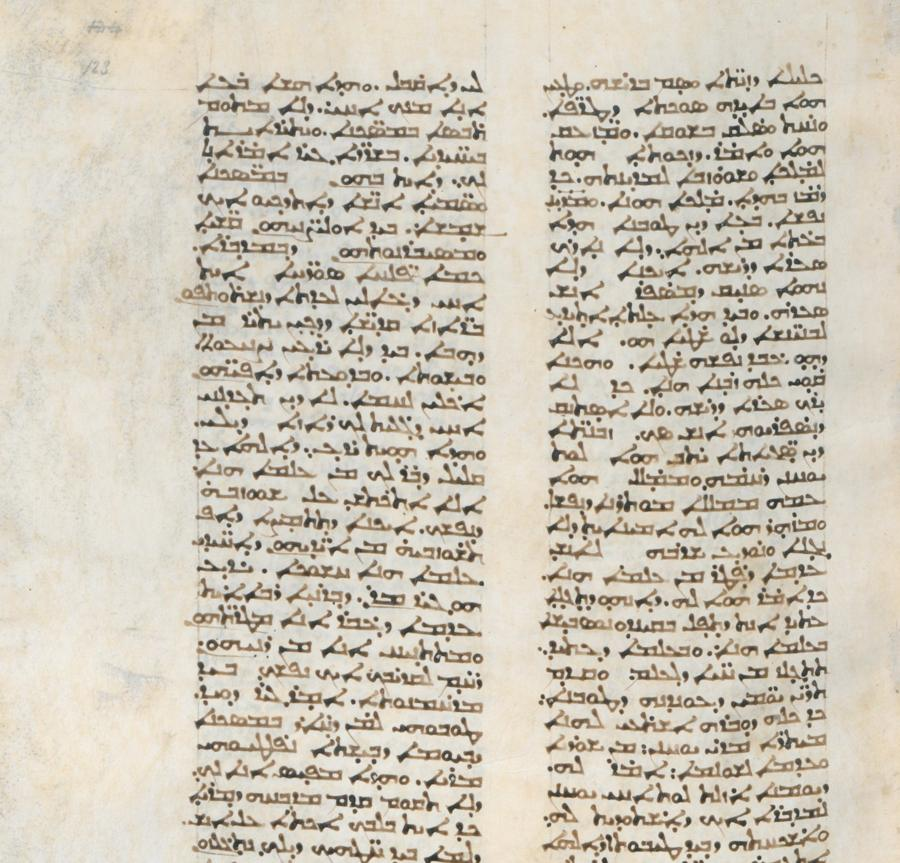
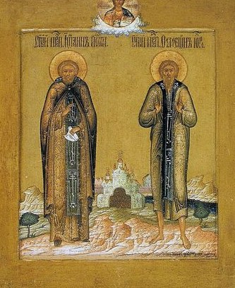
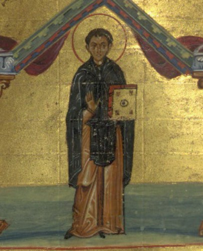
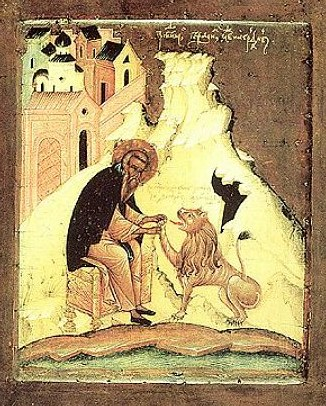
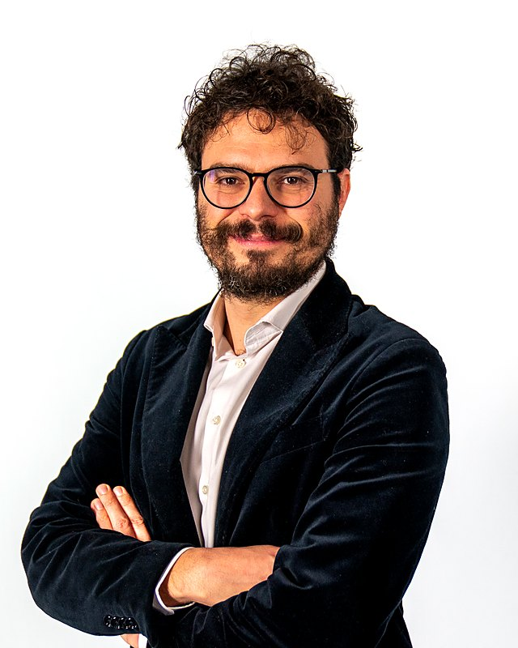

From Byzantium to the Christian East: Hagiography in Translation
Buenos Aires Conference on Syriac Hagiography. Universidad Pedagógica Nacional (UNIPE), Buenos Aires.
Marie Skłodowska-Curie Actions · Horizon Europe
Byzantine lives of saints in the Syriac tradition: their translation, their transmission in manuscripts, and their critical edition.
The saints: Symeon the Holy Fool · John Calybites · Gerasimos of the Jordan

Project
Many lives of saints composed in Greek were translated into Syriac and copied for centuries in the monasteries of the Syriac Orthodox Church. In passing from one language and one community to another, these texts were adapted to new readers, and they went on changing from one manuscript to the next.
SAINTS studies the Syriac versions of three such lives: those of Symeon the Holy Fool, John Calybites and Gerasimos of the Jordan. It reads them alongside the Greek tradition, follows them through their manuscripts, and prepares their critical editions with English translations.
The project combines philology with digital approaches to the edition of texts and to stemmatology, the study of the relationships between manuscripts.
Project
As a Global Fellowship, SAINTS takes place in three stages:

The saints
Συμεὼν ὁ Σαλός · feast 21 July
According to his Greek Life, written in the mid-seventh century by Leontius, bishop of Neapolis in Cyprus, Symeon met his companion John on a pilgrimage from Syria to Jerusalem. On the way back the two entered the monastery of Abba Gerasimos by the Jordan, and then lived as hermits in the desert near the Dead Sea for twenty-nine years.
Symeon then went to Emesa (Homs, in Syria), where he lived as a “fool for Christ”, hiding his holiness behind absurd and scandalous behaviour until his death. The church historian Evagrius places him in the reign of Justinian. Leontius' work is the first full-length life of a holy fool.

The saints
Ἰωάννης ὁ Καλυβίτης · feast 15 January
John, called “the hut-dweller” (from kalybē, “hut”), is a saint of the fifth century. In the Greek tradition he is the son of a wealthy family of Constantinople who secretly left home as a boy to become a monk among the Akoimetoi, the “Sleepless” monks.
Years later he came back unrecognised and lived as a beggar in a hut at his parents' gate, revealing who he was only on his deathbed, through the Gospel book they had given him as a child. The Latin tradition sets the story in Rome, where a church on the Tiber Island bears his name.

The saints
Γεράσιμος ὁ Ἰορδανίτης · feast 4 March
Gerasimos came from Lycia, in Asia Minor, where he first lived as a monk. He later settled in the desert by the Jordan, not far from Jericho, and founded a laura there; he died in 475. Cyril of Scythopolis relates that after the Council of Chalcedon (451) he at first followed its opponents, and that Euthymius won him over to the council's definition.
He is best remembered for the lion that he freed from a thorn in its paw and that then served his monastery, a story told by John Moschus in the Spiritual Meadow. His monastery also appears in the Life of Symeon the Holy Fool.
Texts
ܬܘܒ ܬܫܥܝܬܐ ܕܕܘܒܪ ܚ̈ܝܘܗܝ ܕܩܕܝܫܐ ܡܪܝ ܫܡܥܘܢ ܛܘܒܢܐ܆ ܗ̇ܘ ܕܡܛܠ ܡܫܝܚܐ ܐܬܩܪܝ ܣܠܘܣܐ܇ ܘܕܝܘܚܢܢ ܐܚܘܗܝ. ܨܠܘܬܗܘܢ ܥܡܢ. ܕܐܬܟܬܒܬ ܡܢ ܠܐܘܢܛܝܘܣ ܐܦܝܣܩܘܦܐ ܕܢܐܦܘܠܝܣ ܕܩܘܦܪܘܣ.
83.3 ܐܝܠܝܢ ܕܕܘܒܪ̈ܐ ܐܠܗ̈ܝܐ ܠܐܚܪ̈ܢܐ ܡܚ̇ܦܛܝܢ ܠܡܫܬ̇ܥܝܘ: ܙ̇ܕܩ ܠܗܘܢ ܕܗ̣ܢܘܢ ܩܕܡܐܝܬ ܢܡܪܘܢ ܒܗܘܢ. ܘܕܡܘܬܐ ܠܐܚܪ̈ܢܐ ܢܗܘܘܢ. ܐܝܟ ܡܠܬܐ ܐܠܗܝܬܐ ܕܐܡܪܐ ܕܗܟܢܐ ܢܢܗܪ ܢܘܗܪܟܘܢ ܩܕܡ ܒܢܝ̈ܢܫܐ܆ ܐ̇ܝܟܢܐ ܕܢܚ̣ܙܘܢ ܥ̇ܒ̈ܕܝܟܘܢ ܛ̈ܒܐ̣ ܘܢܫ̇ܒܚܘܢ ܠܐܒܘܟܘܢ ܕܒܫܡܝܐ܀
ܐܝܬ ܓܝܪ ܣ̈ܓܝܐܐ ܕܩܕܡ ܕܠܢܦܫܗܘܢ 110.3 ܢܐܠܦܘܢ܆ ܠܐܚܪ̈ܢܐ ܨ̇ܒܝܢ ܕܢܟ̇ܘܢܘܢ. ܘܫܒ̣ܩܘ ܕܥܠ ܡ̈ܝܬܐ ܕܝܠܗܘܢ ܢܒ̣ܟܘܢ܆ ܘܒܝܘܠܦܢܐ ܕܐܚܪ̈ܢܐ̣ ܪܢܘ ܘܐܬܡܠܝܬ ܥܠܝܗܘܢ ܡܠܬܐ ܡܐܚܝܢܝܬܐ ܘܕܫ̇ܘܝܐ ܠܕܘܡܪܐ ܕܡܪܐܟܠ ܕܐܡ̇ܪܐ. ܕܟܠ ܕܠܐ ܢܥ̣ܒܕ ܘܢ̇ܠܦ܆ ܗܢܐ̣ ܙܥܘܪܐ ܢܬܩ̣ܪܐ ܒܡ̇ܠܟܘܬܐ ܕܫܡܝܐ܀
ܘܬܘܒ܆ ܢ̇ܣܒ ܒܐ̈ܦܐ܇ ܐܦ̣ܩ ܠܘܩܕܡ ܩ̇ܪܝܬܐ ܡܢ ܥܝܢܟ. ܘܗ̇ܝܕܝܢ ܢܬܒ̣ܚܪ ܠܟ ܠܡ̇ܦܩܘ ܓ̣ܠܐ ܡܢ ܥܝܢܗ ܕܐܚܘܟ. ܘܬܘܒ ܦܘܠܘܣ ܫܠܝܚܐ ܐܠܗܝܐ ܘܡ̇ܐܢܐ ܓܒܝ̣ܐ ܟܕ ܡܟܘܢ ܠܪ̈ܘܡܝܐ ܒܐܓܪܬܐ ܕܟܬ̣ܒ ܠܗܘܢ܆ ܗܟܢܐ ܐܡ̣ܪ. ܕܐܘ ܕܠܐܚܪ̈ܢܐ ܡ̇ܠܦ܆ ܠܢܦܫܟ܆ ܠܐ ܡ̇ܠܦ ܐܢܬ. ܐܠܐ ܒܝܕ ܕܡܢ ܟܠܗܝܢ ܡܝܬܪ̈ܬܐ ܐܝܬܝܢ ܥܪܛ̈ܠܝܐ: ܒܝܕ ܡܗܡܝܢܘܬܐ ܕܐܡܝܢܐܝܬ ܩܢܝܢܢ. ܢܕܢܚ ܩܕܡܝܟܘܢ ܕܘܒܪ̈ܐ ܫ̈ܒܝܚܐ ܕܩ̈ܕܝܫܐ. ܘܢܩܪܒ ܠܟܘܢ ܡܢ ܥܡ̈ܠܐ ܘܕܘܥ̈ܬܐ ܕܐܚܪ̈ܢܐ̣ ܡܐܟܘܠܬܐ ܕܠܐ ܐܒܕܐ܆ ܐܠܐ ܕܡܩܘܝܐ ܘܕܡܕܒܪܐ ܠܢܦܫ̈ܬܟܘܢ ܠܚ̈ܝܐ ܕܠܥܠܡ. ܠܚܡܐ ܡ̇ܢ ܓܝܪ ܣ̇ܡܟ ܠܒܗ ܕܒܪܢܫܐ܆ ܡܠܬܐ ܕܝܢ ܕܐܠܗܐ ܠܘܬ ܕܘܒܪ̈ܐ ܐܠܗ̈ܝܐ ܘܫ̈ܒܝܚܐ ܠܢܦܫܐ ܢܬܦܐ. 139.1 ܐܝܟܢܐ ܕܒܪܚܡܬܐ ܐܠܗܝܬܐ ܠܡܐܝܢܘܬܐ ܕܢܦܫܐ ܢܫܕܐ 160.2 ܡܢܢ܆ ܘܢܪܕܐ ܒܐܘܪܚܐ ܐܠܝܨܬܐ ܘܩܛܝܢܬܐ ܠܚ̈ܝܐ ܕܠܥܠܡ. ܗ̇ܝ ܕܐܦ ܠܚܐܪܘܬܢ ܘܨܒܝܢܢ܆ ܢܩܝܦܐ ܘܕܠܝܠܐ. ܕܐܘ ܒܪܚܡܬܐ ܘܛܘܥܝܝ ܕܐܝܠܝܢ ܕܥܒܪ̈ܢ܆ ܢܚܠܦ ܗܠܝܢ ܕܠܐ ܥܒܪ̈ܢ ܘܠܐ ܡܫܬܪ̈ܝܢ. ܐܘ ܒܪܓܬܐ ܘܒܚܘܝܚܘܬܐ ܚܠܦ ܗܠܝܢ ܕܥܒܪ̈ܢ ܘܡܬܚ̈ܒܠܢ܇ ܢܩܢܐ ܘܢܓܒܐ ܠܢ ܛܒ̈ܬܐ ܕܠܐ ܡܬܚ̈ܒܠܢ ܘܠܐ ܒ̈ܠܝܢ. ܘܕܫܪ̈ܝܪܢ ܗܠܝܢ ܕܐܬܐܡܪ̈ܝ܆ ܗܐ ܡܟܣ̇ܝܢ ܠܢ ܟܠܗܘܢ ܒܢܝ̈ܢܫܐ ܐܝܠܝܢ ܕܡܢ ܒܪܝܫܝܬ ܫܦܪܘ ܠܐܠܗܐ. ܐܝܠܝܢ ܕܐܦ ܗܢܘܢ ܟܝܢܢ ܡܥܛܦܝܢ ܗܘܘ.܀
ܘܝܬܝܪܐܝܬ ܕܐܦ ܥܡ̈ܘܕܐ ܢܗܝܪ̈ܐ. ܕܒܙܒܢܐ ܕܝܠܢ ܐܬܚ̣ܙܝܘ. ܕܚܕ ܡܢܗܘܢ ܐܝܬܘܗܝ܆ ܫܡܥܘܢ ܛܘܒܢܐ. ܕܡܢ ܣ̈ܓܝܐܐ ܟܚܝܕ ܗܘܐ ܘܢܟܦ. ܒܝܕ ܕܠܗܢܐ ܟܠܗ ܪܘܡܐ ܕܕܟܝܘܬܐ ܘܠܐ ܚܫܘܫܘܬܐ ܐܬܡܛܝ܆ 110.4 ܘܐܝܠܝܢ ܕܠܚ̈ܫܐ ܘܠܪ̈ܓܝܓܬܐ ܦܓܪ̈ܢܝܬܐ ܡܫܥܒܕܝܢ܆ ܘܪܦܝܘܬܐ ܘܟܫܠܐ ܡܣܬܒܪ̈ܢ ܕܐܝܬܝܗܝܢ܆ ܡܢ ܕܘܒܪ̈ܐ ܕܡܝܬܪܘܬܐ ܒܗܘܢ ܒܗܠܝܢ ܗܢܐ ܛܘܒܢܐ܆ ܐܝܟ ܡܪܓܢܝܬܐ ܒܣܝܢܐ ܐܬܗܦܟ. ܐܡ̇ܪ ܐܢܐ ܕܝܢ ܒܡܕܒܪܢܘܬܗ ܕܒܡܕܝܢܬܐ. ܘܡܬܗܦܟܢܘܬܗ ܕܥܡ ܢܫ̈ܐ. ܘܛܘܥܝܝ ܕܥܠܡܐ ܗܢܐ. ܟܕ ܚ̣ܦܝܛ ܗܘܐ ܕܢܚܘܐ ܠܙܥܘܪ̈ܝ ܗܝܡܢܘܬܐ ܚܝܠܐ ܐܠܗܝܐ. ܕܠܐܝܠܝܢ ܕܒܦܪܘܫܘܬܐ ܘܒܗܝܡܢܘܬܐ ܫܪܝܪܬܐ ܡܬܕܒܪܝܢ ܠܘܩܒܠ 161.1 ܪ̈ܘܚܐ ܒܝܫ̈ܬܐ܀
ܡܦܝܣ ܐܢܐ ܕܝܢ ܠܟܠܗܘܢ ܐܝܠܝܢ ܕܡܬܗܓܝܢ ܒܬܫܥܝܬܐ ܗܕܐ ܡܠܐܟܝܬܐ ܕܒܕܚܠܬ ܐܠܗܐ ܠܐܝܠܝܢ ܕܐܡܝܪ̈ܢ ܢܣܬܟܠܘܢ. ܘܒܗܝܡܢܘܬܐ ܐܝܕܐ ܕܝ̇ܐܝܐ ܠܡܗ̈ܝܡܢܐ ܫܪܝܪ̈ܐ. ܝܕܝܥܝܢܢ ܓܝܪ ܕܠܟܦܘܪ̈ܐ ܘܫ̈ܛܝܐ܆ ܐܝܟ ܡܬ̈ܠܐ ܘܕܡ̈ܠܝܢ ܓܘܚܟܐ ܡܣܬܒܪ̈ܢ ܕܐܝܬܝܗܝܢ. ܘܐܠܘ ܓܝܪ ܐܣܬܟܠܘ: 28.1 ܐܝܠܝܢ ܕܡܢ ܫܠܝܚܐ ܐܠܗܝܐ ܐܬܐܡܪ̈ܝ
Publications of the project will be listed here as they appear. In line with the Horizon Europe rules, they will be available in open access, including through IRIS, the institutional repository of Sapienza University of Rome.
Events
Buenos Aires Conference on Syriac Hagiography. Universidad Pedagógica Nacional (UNIPE), Buenos Aires.
Events
SAINTS begins at the Universidad Pedagógica Nacional (UNIPE) in Buenos Aires.
People and institutions

Principal investigator · Marie Skłodowska-Curie Fellow
Guido Venturini is a philologist working on Greek and Syriac texts of Late Antiquity, with a focus on textual criticism, hagiography and early Christian literature. Trained in Classical Philology, he received his PhD in Syriac and Byzantine philology from Sapienza University of Rome (2019) with a thesis on the Syriac version of the Life of John the Merciful, which he then edited and translated in the Corpus Scriptorum Christianorum Orientalium (Louvain). He held postdoctoral positions at the universities of Louvain, Buenos Aires and Venice, working with the GREgORI project and the ERC project FLOS, for which he published the critical edition of the anti-Julianist florilegium (Leiden, 2026). He has taught Greek and Latin language and culture at university level in Argentina and Humanities in Italian secondary schools.
People and institutions
Department of History, Anthropology, Religions, Arts and Performing Arts (SARAS).
Universidad Pedagógica Nacional, Buenos Aires.
Institute for Computational Linguistics “A. Zampolli”.
People and institutions
Department of History, Anthropology, Religions, Arts and Performing Arts (SARAS).
uniroma1.it ↗National Research Council of Italy, Pisa.
ilc.cnr.it ↗Guido Venturini
Sapienza University of Rome, Department SARAS
guido.venturini@uniroma1.it
venturini.guido89@gmail.com